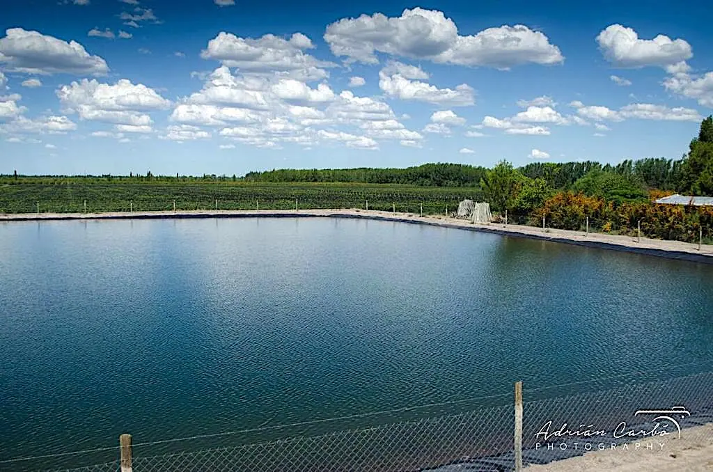
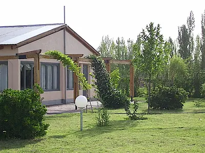

General Alvear, Mendoza
Hermosa finca de 40 ha (100 acres) con 2 casas y viñedo en General Alvear: US$400.000, negociable
¡Tasada US$200.000 por encima del precio de venta!

Esta hermosa finca de 40 hectáreas (100 acres) con dos casas tiene 30 hectáreas (75 acres) implantadas con uvas de vinos finos, a pocos minutos de General Alvear.
Las uvas son 75% syrah y 25% malbec. Los viñedos se riegan por goteo y están cubiertos con malla antigranizo.
La finca tiene un pozo de riego y una buena represa con capacidad para 10 millones de litros (2,6 millones de galones).

General Alvear es una ciudad de unos 30.000 habitantes, ubicada a 90 km (55 millas) al sudeste de San Rafael.
Videos
Se reproduce acá mismo. No se envía nada a YouTube hasta que usted le dé play.
-
Mechanical harvest — part 1 Ver en YouTube
-
Mechanical harvest — part 2 Ver en YouTube
El resto de las fotos
8 fotos más de esta propiedad. Toque cualquiera para verla en grande.


{kind=link}
{kind=link}
{kind=link}
{kind=link}
{kind=link}
{kind=link}
{kind=link}
{kind=link}
{kind=link}